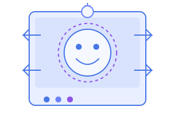

Empowering Communication Beyond Words
An AI-powered solution that interprets silent speech in real-time for mute individuals
Speech Output
Your interpreted speech will appear here...
Facial Expression Recognition
Lips
Face
Context
How to Use the Silent Speech Interpreter
1
Position Yourself
Make sure your face is clearly visible in the camera with good lighting.

2
Start Speaking Silently
Articulate words clearly with your lips as if you were speaking normally.
3
Review Output
Check the transcription box to see your interpreted speech.
4
Play Audio
Click the 'Play Speech' button to have your text spoken aloud.